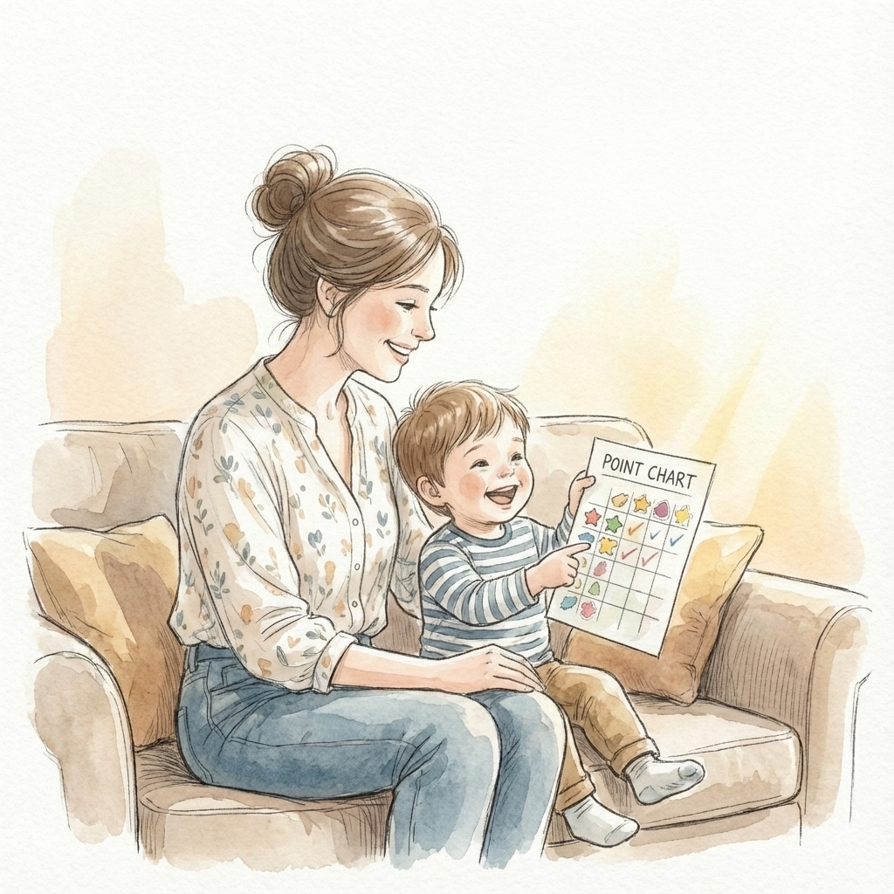

從權力鬥爭到資源管理：
The Points Bank
Story.
「阿迷，我想要看電視！」這曾經是我們家每天最頻繁出現的背景音。
作為兩個男孩的媽媽，我深深理解那種「螢幕時間」帶來的焦慮感。我們都知道完全禁止是不切實際的，但看著孩子沉溺在平板裡，心裡總是免不了會隱隱作痛。以前我們家用的是口頭約定，或是簡單的計時器，但效果有限，最後往往演變成「我說不行、他喊還要」的拉鋸戰。
後來我開始想，如果把這件事變成一種「資源管理」的練習呢？
"讓孩子從「被管理者」變成「決策者」。"
— 這是點數存摺的核心初衷
為什麼是「存摺」？
這套系統的核心不是為了「獎賞」或是「懲罰」，而是為了練習「延遲享樂」。我設計了一套點數機制：每天有固定的基本額度，但如果今天少看一些，剩下來的時間就會轉化成點數存進存摺。這些點數不僅可以換回未來的螢幕時間，也可以選擇換成零用錢。
對於孩子來說，那種「看得見的數字」非常有效。他開始會算：『如果我現在忍住不看，我的存摺就會多 10 點，那我就可以存到錢買更帥的小車車了。』
從簡單實作到完整的 Points Bank
一開始，這只是一個簡單的 HTML 頁面，存在GitHub Pages上。但隨著應用的情境變多、身邊的朋友也開始感興趣，我決定把它做成一個更完整的 Web App —— 也就是現在的 Points Bank 點數存摺。
新版本加入了不少實用功能：
- 二元兌換路徑：彈性設定點數與時間、金錢的匯率。
- 家庭同步機制：升級資料庫，修改更即時。登入 Google 帳號後，全家人都可以同步管理。
- 完整的紀錄歷程：每一筆點數的來源與去向都清清楚楚，是建立信用最好的基礎。
- 批次管理：家裡有多個小孩時，一鍵就能調整大家的額度，不需要一個個點開。
練習，是為了有一天能不再需要
可能會有人想問，這樣會不會讓孩子變得太計較？其實我的看法剛好相反。透過這套系統，孩子學到的是：「所有的時間與資源都是有限的，而我有權力、也有責任決定怎麼使用它們。」
這套工具就像是孩子成長過程中的「輔助輪」。我們在一個安全的環境下（螢幕時間與零用錢），讓他們練習自主、管理衝動。我希望有一天，當他們長大到能自主管理生活時，這套系統就能功成身退，而留在他身上的，是那份對自己人生的掌控感。
如果你也正在為了孩子的螢幕時間苦惱，或許可以試試看這套方法。不一定要用我的工具，但轉變視角的那個瞬間，或許就是家庭氣氛變好的起點（笑）。
Keep Exploring, and Leave Traces.